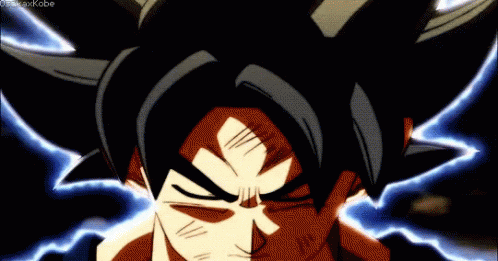
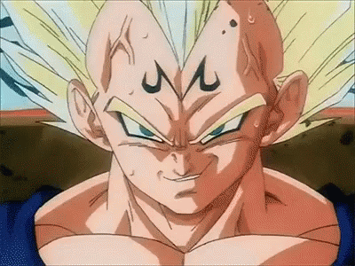

Pure blooded saiyans
-
Goku
 - The legendary Saiyan who unlocked Ultra Instinct. He is known for his kind heart, endless training, and heroic spirit.
- wanna know more click on the link below or on the gif:
-
vegeta
 - Vegeta is the proud Saiyan prince known for his fierce pride and relentless drive to surpass Goku. Though once ruthless, he’s grown into a brave warrior who fights to protect his family and Earth. Vegeta’s endless training and stubborn spirit make him a powerful and respected hero.
- Wanna know more about saiyan prince click below or just click on gif:
-
Broly

- Broly is the legendary Saiyan known for his overwhelming strength and fierce rage in battle. Though wild and uncontrollable at times, he has a strong heart beneath his fury. Broly’s raw power and untamed spirit make him one of the most fearsome Saiyans in existence.
- explore more experience about broly by clicking below/picture
Back to Portfolio